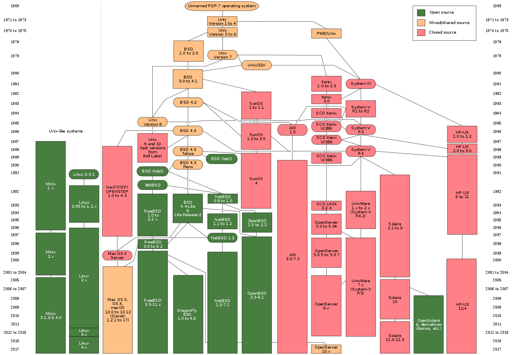

# Linux Learn about the history of the Linux operating system. This material is part of [architecture & deployment course](https://github.com/MediaComem/comem-archidep) for [Media Engineering](https://heig-vd.ch/formations/bachelor/filieres/ingenierie-des-medias). --- ## What is Linux? .breadcrumbs[<a href="#1">Linux</a>] .grid-60[ [Linux][linux] is a family of free and open-source software operating systems built around the [Linux kernel][linux-kernel], an [operating system kernel][kernel] first released in 1991, by [Linus Torvalds][linus]. ] .grid-40[ ] .container[ It is based on [Unix][unix], an operating system released in 1971 at AT&T's [Bell Laboratories][bell-labs] in the United States. As it was [proprietary software][proprietary], Linus Torvalds decided to release his own [open source][oss] kernel. ] --- ### Unix history .breadcrumbs[<a href="#1">Linux</a> > <a href="#2">What is Linux?</a>]  --- ### Why use Linux? .breadcrumbs[<a href="#1">Linux</a> > <a href="#2">What is Linux?</a>] There are many [reasons to use it][linux-pros]: * Open source philosophy * Low or no cost * Better system stability * Lightweight distributions (lower CPU/RAM usage & smaller size) Some of these properties make Linux an ideal for: * [Embedded systems][embedded] (e.g. [BusyBox][busybox] is only 2.1MB compressed). * [Servers][linux-servers] (Linux is used as the operating system on more than 50% of all servers, and is used on most supercomputers). > Note that no system is perfect. > Linux also has [barriers to adoption][linux-cons], > mostly the facts that it rarely comes pre-installed and that it requires users to know more about managing their operating system. --- ### Linux distribution timeline .breadcrumbs[<a href="#1">Linux</a> > <a href="#2">What is Linux?</a>] Linux is not just one operating systems, it is a family of systems called [Linux distributions][linux-distros]. For example, on desktop or server, the most popular is [Ubuntu][ubuntu]. <p class='center'><img src='images/major-linux-distributions-history.png' width='70%' /></p> > This chart only shows the most popular distributions. > [There are more][linux-timeline]. [bell-labs]: https://en.wikipedia.org/wiki/Bell_Labs [busybox]: https://en.wikipedia.org/wiki/BusyBox [embedded]: https://en.wikipedia.org/wiki/Embedded_system [kernel]: https://en.wikipedia.org/wiki/Kernel_(operating_system) [linus]: https://en.wikipedia.org/wiki/Linus_Torvalds [linux]: https://en.wikipedia.org/wiki/Linux [linux-cons]: https://en.wikipedia.org/wiki/Linux_adoption#Barriers_to_adoption [linux-distros]: https://en.wikipedia.org/wiki/Linux_distribution [linux-kernel]: https://en.wikipedia.org/wiki/Linux_kernel [linux-pros]: https://en.wikipedia.org/wiki/Linux_adoption#Reasons_for_adoption [linux-servers]: https://en.wikipedia.org/wiki/Linux#Servers,_mainframes_and_supercomputers [linux-timeline]: images/linux-distribution-timeline.svg [oss]: https://en.wikipedia.org/wiki/Open-source_software [proprietary]: https://en.wikipedia.org/wiki/Proprietary_software [ubuntu]: https://www.ubuntu.com/ [unix]: https://en.wikipedia.org/wiki/Unix